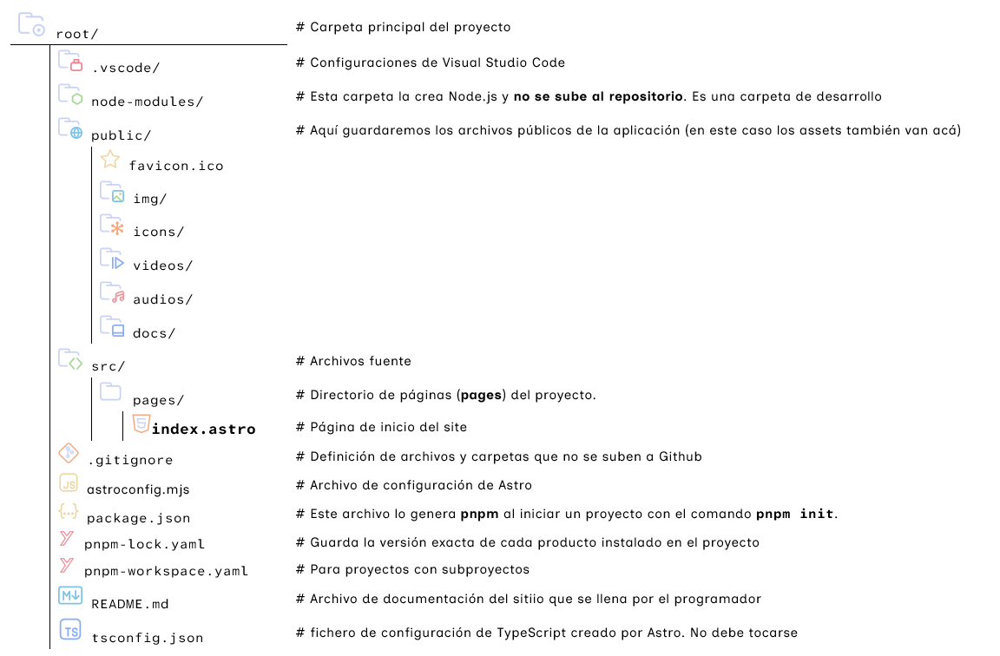

Crear un proyecto con Astro.build
Ventajas de Astro
Astro cuenta con las siguientes ventajas sobre otros frameworks de JavaScript:
- Sencillez de su código
- Su rapidez.
- Funciona tanto solo, como integrando otros frameworks de JS
- Tiene variedad de plantillas
Creando un proyecto con Astro
Necesitamos tener instalado en el ordenador, Node.js
Para crear un proyecto nuevo en Astro, entramos en la carpeta superior que contendrá la carpeta del proyecto, y ejecutamos el siguiente comando con la terminal (cmder):
pnpm dlx create-astro@latestAl lanzar el comando y una vez instalado lo necesario, Astro nos hará las siguientes preguntas:
-
dir ¿Dónde quieres crear tu aplicación? (
Where should we create your new project?)
Responde: aprendiendoastro -
tmpl ¿Cómo quieres comenzar el proyecto? (
How would you like to start your new project?)
Elige una de las siguientes opciones:- >
A basic, helpful, starter project(incluye archivos de ejemplo) - -
Use blog template(usa una plantilla de blog) - -
Use docs (starlight) template(usa una plantilla de wikis, documentación) - -
Use minimal (empty template)(proyecto vacío). Elije este punto
- >
-
deps ¿Deseas instalar dependencias? (
Install dependencies?)
SeleccionaYes(Sí) -
git Deseas inicializar un repositorio de GitHub? (
Initialize a new git repository?)
Responde No.
Una vez terminado el proceso, podremos abrir el proyecto con Visual Studio Code en la carpeta en la cual
creamos el mismo en el Punto 1: (aprendiendoastro)
Al abrir la carpeta verás la estructura inicial de un proyecto de Astro en vscode

Finalmente, instalaremos la extensión Astro de Visual Studio Code, para colorear
el código de Astro.
Inicializar el proyecto de desarrollo
Ejecutamos en la terminal:
pnpm run devEsto nos permitirá abrir un servidor en el navegador.